Occasions
In the tradition Ajia works in, the sweet is not decoration at the edge of the event — it is part of how the day is marked. What follows is what she actually makes for each one, and the two or three things worth deciding before you write to her.
Weddings
A wedding usually calls for two different things: something for every guest, and something for the room. The favour is small, wrapped and multiplied: a single rose, a grape cluster, a bride and groom on a stick. The centrepiece is one tray, banked with roses, that gets carried in whole and set down.
- Favours are wrapped in cellophane and ribboned in your colour
- Roses can be matched to a swatch: dusty rose, coral, mauve, ivory
- A flatter plaque version of the couple boxes and travels better than the standing figure; both sizes are listed in the catalogue
- Two long trays set end to end read as one runner down the table
 Rose trays
Rose trays
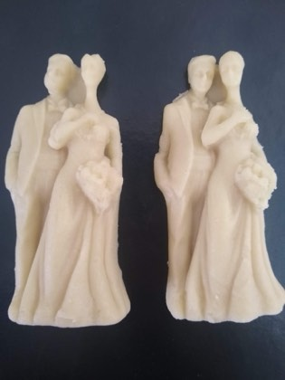
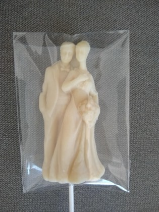
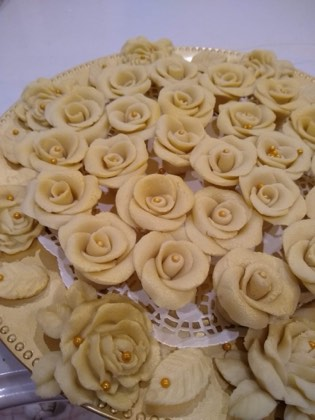
Baptisms & christenings
A sleeping baby, swaddled, in a bonnet scored to look knitted and sculpted in two tones. Pink, blue, soft grey or all white. Ajia's photographs show them made in rows and wrapped one at a time, then set onto a gold tray in rings with a pearl at each bonnet.
- Ask Ajia how many to allow for your guest count — she will tell you what she has seen
- Grey and cream is the usual choice when the colour is not being announced
- A round tray works as the centre of the sweet table; ask her what it holds at your size
 The baptism tray
The baptism tray
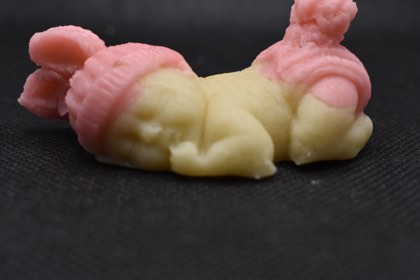
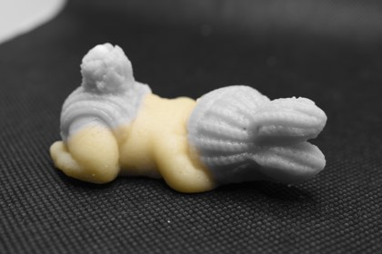
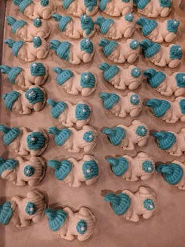
First communion
A chalice with wheat and grapes, pressed in relief from a carved mould and finished by hand with edible gold. It is flat, so it boxes well and survives the drive to the church hall. The photograph beside it was taken against a ruler, which is the honest way to show how big a thing is.
- 2½ inches tall, measured against the ruler in the photograph: one at each place, or one boxed as a keepsake
- The gold is applied after the plaque has set, leaf by leaf
- Cream roses and white flowers are the usual companions on the tray
 Chalice plaque
Chalice plaque
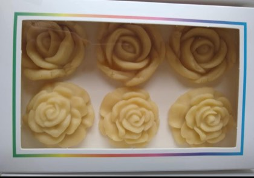
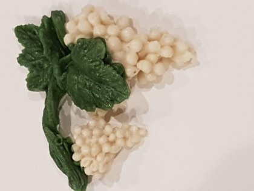
Parties, birthdays & anything with a theme
This is where the range stops being a claim. Send a photograph of the invitation, the cake, the cartoon, the logo, and Ajia will tell you whether she can sculpt it in marzipan. Turtles in teal with piped white shells, numbers, letters, animals, a company mark for an office party. It is one material and one pair of hands, which is why the range is as wide as it is.
- Colours are mixed to match; bring a photo or a hex code
- Tell her the quantity you need and she will say what is workable
- Gluten-free, dairy-free and vegan, so it suits the table where someone at it cannot eat wheat, butter or egg
 Made to the theme
Made to the theme
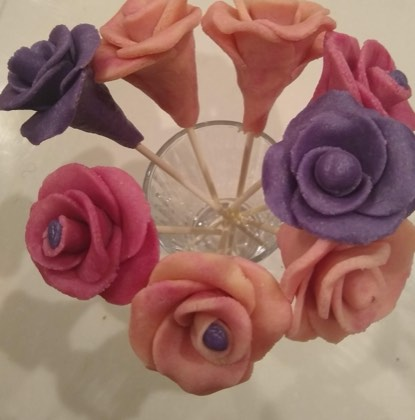
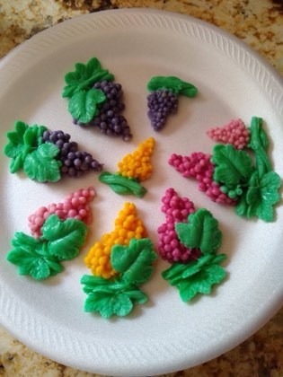
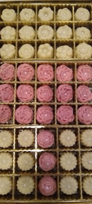
Christmas, Easter & the holidays
The holiday work is the loudest thing she makes and she does not apologise for it: rings of red and green poinsettias closing on a centre of cream roses, fluted rosettes boxed by the dozen, sugared hearts with a rose set on top. At Easter the palette drops to pastel: eggs, bunnies and carrots stacked in a tall bag with a bow.
- Boxes of 12, 15 and 24 are the usual sizes for giving
- The poinsettia tray is the table centre rather than something set beside it; ask her what it holds at the size you need
- Ask about December earlier than you think you need to
 Poinsettia centrepiece
Poinsettia centrepiece
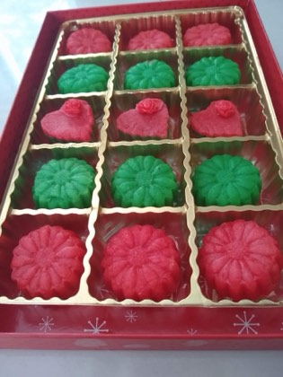
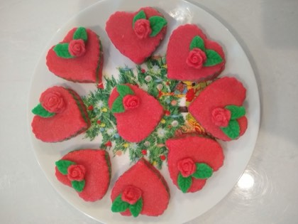
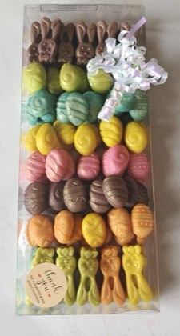
Gifts & smaller things
Not every order is an event. A box of six roses, a jar of chocolate-dipped marzipan with a ribbon on the lid, a boxed grid of small flowers in gold cups. These are the things people buy when they need something that does not look like it was bought at the last minute.
- Boxes and jars need less notice than a tray, but ask her for the lead time on your date
- The marzipan is gluten-free, dairy-free and vegan, so a box travels to anyone; the two chocolate-dipped jars are the exception and say so
- Marzipan keeps well, which is one reason it became a celebration sweet
 Chocolate-dipped
Chocolate-dipped
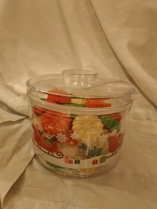
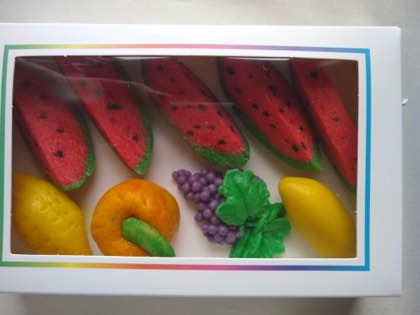
What is your date?
That is the first thing she will ask. Put it on the sheet with whatever else you know, and she will tell you what is possible.